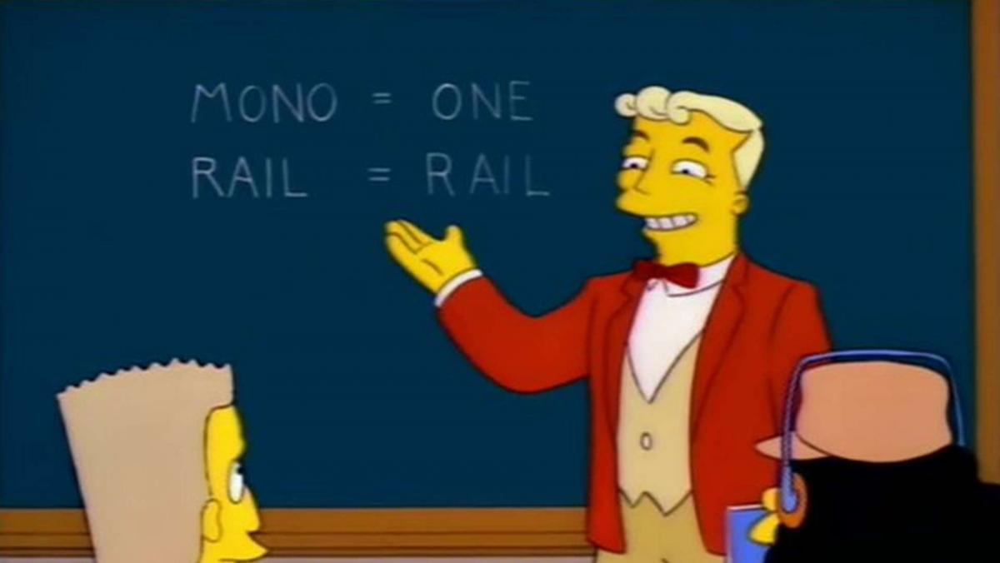

Es el duodécimo episodio de la cuarta temporada de Los Simpson y fue emitido originalmente el 14 de enero de 1993. El argumento gira en torno a la compra de un monorraíl a un estafador, por parte de la ciudad de Springfield, y al disgusto de Marge por esta adquisición.
Introducción
Tras ser atrapado por la EPA vertiendo residuos nucleares en el parque de la ciudad, el señor Burns es multado con tres millones de dólares. Inmediatamente se mantiene una reunión municipal para que los ciudadanos pudieran decidir cómo gastar el dinero. Lyle Lanley sugiere que la ciudad compre un monorriel.

Homero ve un anuncio que le sugiere que se convierta en conductor del monorraíl e inmediatamente acepta, argumentando que este era el sueño de toda su vida. Tras un curso "intensivo" de tres semanas, Homer es nombrado conductor del monorraíl.
Homero
Toda la ciudad asiste al viaje inaugural del monorraíl, en principio las cosas se desarrollan sin problemas, pero los controles comienzan a funcionar mal, causando una aceleración peligrosa.

Nadie sabe cómo detener el monorraíl, Cobb le dice a Homero que para detener el tren, necesita encontrar un ancla. Homero agarra la “M” gigante del monorraíl, situada a un costado del mismo, y la utiliza como un ancla. Finalmente, esta se traba en una rosquilla gigante, deteniendo el monorraíl y salvando a sus pasajeros.